Sources: Google, new (the November 2026 model); Google, current (the model behind the live Flood Hub feed); GloFAS v4 (runs Deyr today); GloFAS v5 (the Deyr design model). Records: reanalysis, the model's own record of the past; forecasts, the first forecast issue in the season whose leads 1 to 7 days reach the threshold, which is what the live trigger reads. Archives: GloFAS v4 2003 to 2023, Google, current 2016 to June 2023, Google, new 2016 to 2025, GloFAS v5 none.
Threshold rule: three of the four Juba points, or two of the three Shabelle points, over their own level on the same day (Juba 1-in-4 and Shabelle 1-in-5 in Deyr, Juba 1-in-5 and Shabelle 1-in-6 in Gu, each model's own levels on its 1999 to 2023 seasonal maxima). Scores: 1999 to 2023 on the reanalysis, 2016 to 2023 on the forecasts.
Gauge benchmark: a flood is two SWALIM gauges on the same river over their own 1-in-3 level; a severe flood is over the 1-in-5. Gauge data run to July 2026. Scores: POD, the share of severe floods with the threshold reached; FAR, the share of threshold seasons with no gauge flood; F1, the harmonic mean of POD and 1 minus FAR.
1Key takeaways
- Largest floods. Every record ranks Deyr 2023 on the Juba; Deyr 2019 on the Shabelle; Gu 2018 and 2020 on the Juba; Gu 2018 on the Shabelle among its five largest floods.
- Severe floods Google, new did not reach on its reanalysis: Deyr 2006, 2014 on the Juba; Deyr 2006 on the Shabelle; Gu 2023 on the Juba.
- Google, new against Google, current: reaches the threshold in more severe floods in Deyr Juba forecasts, Deyr Shabelle forecasts, Gu Shabelle reanalysis; in fewer severe floods in Deyr Juba reanalysis; has more seasons with the threshold reached and no gauge flood in Deyr Juba forecasts, Deyr Shabelle reanalysis; fewer such seasons in Gu Juba reanalysis, Gu Shabelle reanalysis. Elsewhere the two are equal.
- Google, new against GloFAS v4: reaches the threshold in more severe floods in Deyr Shabelle reanalysis, Deyr Shabelle forecasts, Gu Shabelle reanalysis, Gu Shabelle forecasts; in fewer severe floods in Deyr Juba reanalysis; has more seasons with the threshold reached and no gauge flood in Deyr Juba forecasts; fewer such seasons in Deyr Juba reanalysis, Deyr Shabelle reanalysis. Elsewhere the two are equal.
- Google, new against GloFAS v5: reaches the threshold in more severe floods in Gu Shabelle reanalysis; in fewer severe floods in Deyr Juba reanalysis; has more seasons with the threshold reached and no gauge flood in Deyr Juba reanalysis, Deyr Shabelle reanalysis. Elsewhere the two are equal.
- Timing on the forecasts (mean over the five largest floods per river, seasons reached). Deyr: Google, new and GloFAS v4 reach the threshold before the second gauge crossed, GloFAS v4 earlier. Gu: Google, new after the second gauge crossed; Google, current before the second gauge crossed; GloFAS v4 after the second gauge crossed.
- After 2023. Deyr 2024, a severe Shabelle flood, was not reached by Google, new on either record. Gu 2024 was reached on the Juba only; the Shabelle, a severe flood, was not reached. Neither 2025 season was reached.
- Trigger levels. Google, new levels are about twice Google, current's on the Juba and higher on the Shabelle.
2Benchmark: the largest floods at the gauges
The five largest gauge floods per river, largest first, and each source's own rank of them (1 = highest; reanalysis / forecasts). Index: the second-highest gauge's peak as a percentage of its own 1-in-3; for a model, the same at its trigger points. Ties are in printed order. Shaded cells: top five on the reanalysis. No record: season outside the reanalysis. No archive: no forecast archive.
Deyr
| Season | second gauge, % of its 1-in-3 | Google, newreanalysis / forecasts | Google, currentreanalysis / forecasts | GloFAS v4reanalysis / forecasts | GloFAS v5reanalysis / forecasts |
|---|---|---|---|---|---|
| Juba | |||||
| 2023 | 132.1% | 1 / 1 | 1 / no archive | 1 / 1 | 1 / no archive |
| 2014 | 105.5% | 8 / no archive | 12 / no archive | 4 / 4 | 16 / no archive |
| 2024 | 103.8% | 5 / 4 | no record | no record | no record |
| 2006 | 103.6% | 6 / no archive | 4 / no archive | 8 / 7 | 2 / no archive |
| 2017 | 101.9% | 7 / 5 | 11 / 2 | 2 / 2 | 7 / no archive |
| Shabelle | |||||
| 2023 | 129.9% | 3 / 2 | 1 / no archive | 21 / 17 | 1 / no archive |
| 2019 | 123.9% | 1 / 1 | 2 / 1 | 1 / 1 | 2 / no archive |
| 2006 | 123.6% | 13 / no archive | 3 / no archive | 8 / 8 | 3 / no archive |
| 2024 | 117.2% | 8 / 5 | no record | no record | no record |
| 2020 | 114.2% | 4 / 3 | 12 / 3 | 3 / 3 | 6 / no archive |
In the top five of every record that covers the season: Juba 2023 (6 records), 2024 (2 records); Shabelle 2019 (7 records). In the top five of fewer than half: Juba 2014 (2 of 5 records), 2006 (2 of 5 records); Shabelle 2006 (2 of 5 records).
Gu
| Season | second gauge, % of its 1-in-3 | Google, newreanalysis / forecasts | Google, currentreanalysis / forecasts | GloFAS v4reanalysis / forecasts | GloFAS v5reanalysis / forecasts |
|---|---|---|---|---|---|
| Juba | |||||
| 2018 | 120.4% | 2 / 2 | 2 / 2 | 3 / 3 | 1 / no archive |
| 2020 | 115.1% | 1 / 1 | 1 / 1 | 2 / 2 | 4 / no archive |
| 2023 | 115.1% | 5 / 5 | 8 / 4 | 7 / 7 | 8 / no archive |
| 2016 | 107.1% | 4 / 4 | 4 / 3 | 6 / 5 | 3 / no archive |
| 2005 | 105.4% | 8 / no archive | 9 / no archive | 4 / 4 | 6 / no archive |
| Shabelle | |||||
| 2023 | 112.9% | 1 / 1 | 8 / 4 | 10 / 10 | 10 / no archive |
| 2024 | 112.9% | 8 / 6 | no record | no record | no record |
| 2020 | 112.9% | 3 / 3 | 1 / 1 | 8 / 8 | 1 / no archive |
| 2018 | 112.8% | 4 / 4 | 3 / 2 | 4 / 4 | 3 / no archive |
| 2005 | 112.2% | 6 / no archive | 6 / no archive | 3 / 3 | 4 / no archive |
In the top five of every record that covers the season: Juba 2018 (7 records), 2020 (7 records); Shabelle 2018 (7 records). In the top five of fewer than half: Juba 2023 (3 of 7 records), 2005 (2 of 5 records); Shabelle 2023 (3 of 7 records), 2024 (0 of 2 records). Belet Weyne's Gu record is capped at 8.30 m in six seasons.
3Trigger levels of the two Google models
The level each trigger point must reach, on Google, current and on Google, new, fitted the same way.
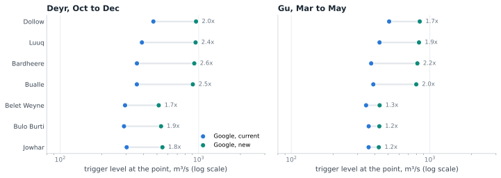
4Threshold outcome by season
Each model's threshold outcome in every season against the gauge benchmark, on the reanalysis and on the forecasts. Blank cells are seasons outside the record or without a gauge record; the dotted lines mark the seasons the tallies and the tables count.
Deyr
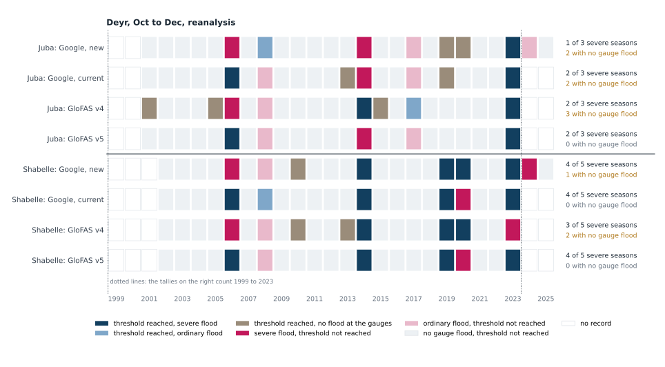
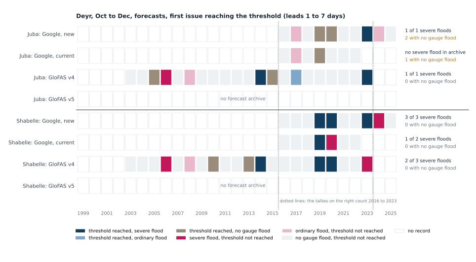
| Source | Record | Juba | Shabelle | ||||
|---|---|---|---|---|---|---|---|
| PODsevere floods, threshold reached | FARthreshold reached, no gauge flood | F1 | PODsevere floods, threshold reached | FARthreshold reached, no gauge flood | F1 | ||
| Google, new | reanalysis 1999 to 2023 | 0.331 of 3 | 0.502 of 4 seasons | 0.40 | 0.804 of 5 | 0.201 of 5 seasons | 0.80 |
| Google, new | forecasts 2016 to 2023 | 1.001 of 1 | 0.672 of 3 seasons | 0.50 | 1.003 of 3 | 0.000 of 3 seasons | 1.00 |
| Google, current | reanalysis 1999 to 2023 | 0.672 of 3 | 0.502 of 4 seasons | 0.57 | 0.804 of 5 | 0.000 of 5 seasons | 0.89 |
| Google, current | forecasts 2016 to 2022 | n/a0 of 0 | 1.001 of 1 seasons | n/a | 0.501 of 2 | 0.000 of 1 seasons | 0.67 |
| GloFAS v4 | reanalysis 1999 to 2023 | 0.672 of 3 | 0.503 of 6 seasons | 0.57 | 0.603 of 5 | 0.402 of 5 seasons | 0.60 |
| GloFAS v4 | forecasts 2016 to 2023 | 1.001 of 1 | 0.000 of 2 seasons | 1.00 | 0.672 of 3 | 0.000 of 2 seasons | 0.80 |
| GloFAS v5 | reanalysis 1999 to 2023 | 0.672 of 3 | 0.000 of 2 seasons | 0.80 | 0.804 of 5 | 0.000 of 4 seasons | 0.89 |
Severe floods counted are those in the record scored; gauges report from 2001 on the Juba and 2002 on the Shabelle.
Gu
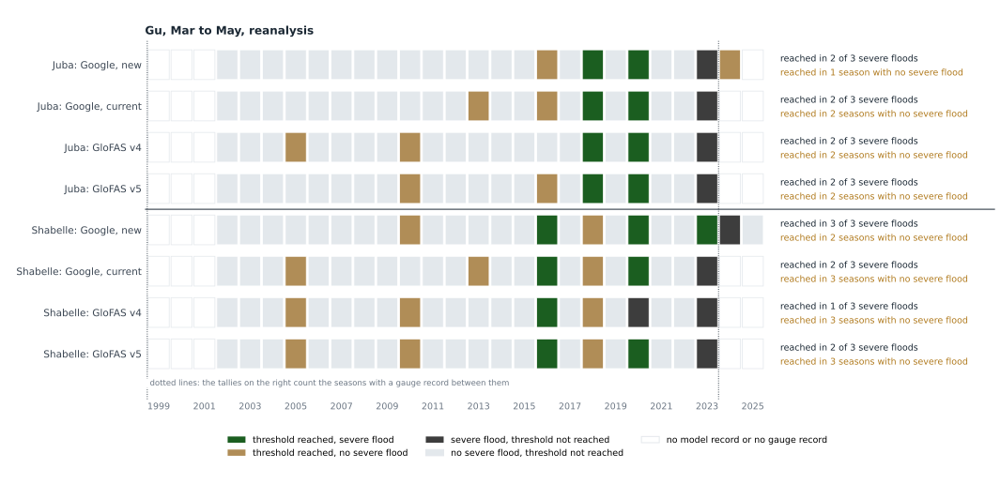
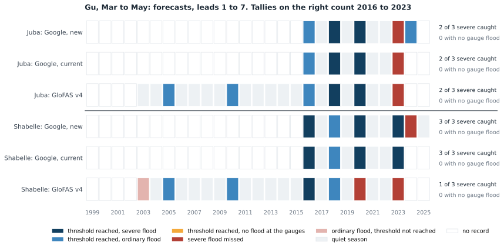
| Source | Record | Juba | Shabelle | ||||
|---|---|---|---|---|---|---|---|
| PODsevere floods, threshold reached | FARthreshold reached, no gauge flood | F1 | PODsevere floods, threshold reached | FARthreshold reached, no gauge flood | F1 | ||
| Google, new | reanalysis 1999 to 2023 | 0.672 of 3 | 0.000 of 3 seasons | 0.80 | 1.003 of 3 | 0.000 of 4 seasons | 1.00 |
| Google, new | forecasts 2016 to 2023 | 0.672 of 3 | 0.000 of 3 seasons | 0.80 | 1.003 of 3 | 0.000 of 4 seasons | 1.00 |
| Google, current | reanalysis 1999 to 2023 | 0.672 of 3 | 0.251 of 4 seasons | 0.71 | 0.672 of 3 | 0.251 of 4 seasons | 0.71 |
| Google, current | forecasts 2016 to 2023 | 0.672 of 3 | 0.000 of 3 seasons | 0.80 | 1.003 of 3 | 0.000 of 4 seasons | 1.00 |
| GloFAS v4 | reanalysis 1999 to 2023 | 0.672 of 3 | 0.000 of 4 seasons | 0.80 | 0.331 of 3 | 0.000 of 4 seasons | 0.50 |
| GloFAS v4 | forecasts 2016 to 2023 | 0.672 of 3 | 0.000 of 3 seasons | 0.80 | 0.331 of 3 | 0.000 of 2 seasons | 0.50 |
| GloFAS v5 | reanalysis 1999 to 2023 | 0.672 of 3 | 0.000 of 4 seasons | 0.80 | 0.672 of 3 | 0.000 of 4 seasons | 0.80 |
Read at leads 0 to 6 instead of 1 to 7, Google, current does not reach the threshold in Gu 2023.
5Timing against the second gauge crossing its 1-in-3
The five largest gauge floods per river. Zero is the day the second gauge crossed its 1-in-3; bars to the left reached the threshold before that day, bars to the right after it. Solid: reanalysis. Light: first forecast issue reaching the threshold (leads 1 to 7 days).
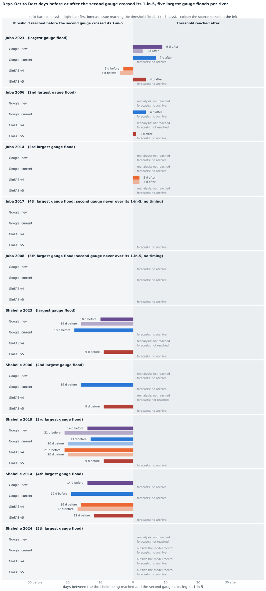
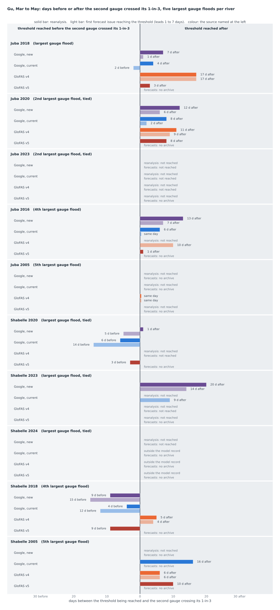
Average timing
Mean and median days between the threshold being reached and the second gauge crossing its 1-in-3, over the same seasons, counting only seasons in which the source reached the threshold.
| Source | Deyr | Gu | ||
|---|---|---|---|---|
| reanalysis | forecasts | reanalysis | forecasts | |
| Google, new | mean 2 d aftermedian 2 d after; reached in 4 of 10 seasons | mean 3 d beforemedian 2 d before; reached in 4 of 7 seasons | mean 10 d aftermedian 10 d after; reached in 6 of 10 seasons | mean 4 d aftermedian 4 d after; reached in 6 of 8 seasons |
| Google, current | mean 2 d beforemedian 5 d before; reached in 5 of 8 seasons | mean 12 d beforemedian 12 d before; reached in 1 of 3 seasons | mean 2 d aftermedian 4 d after; reached in 5 of 9 seasons | mean 2 d beforemedian 1 d before; reached in 6 of 7 seasons |
| GloFAS v4 | mean 6 d beforemedian 4 d before; reached in 5 of 8 seasons | mean 7 d beforemedian 4 d before; reached in 5 of 8 seasons | mean 8 d aftermedian 6 d after; reached in 5 of 9 seasons | mean 8 d aftermedian 8 d after; reached in 6 of 9 seasons |
| GloFAS v5 | mean 1 d aftermedian same day; reached in 5 of 8 seasons | no archive | mean 4 d aftermedian 2 d after; reached in 6 of 9 seasons | no archive |
6Event chronologies: Deyr 2023, Deyr 2019, Gu 2024
Gauge rows: circle, first day over the 1-in-3; diamond, first day over the 1-in-5; tick, peak. Source rows: threshold reached on the reanalysis (filled), first forecast issue reaching the threshold (hollow). FloodScan people in flooded area, by river, where it covers the season.
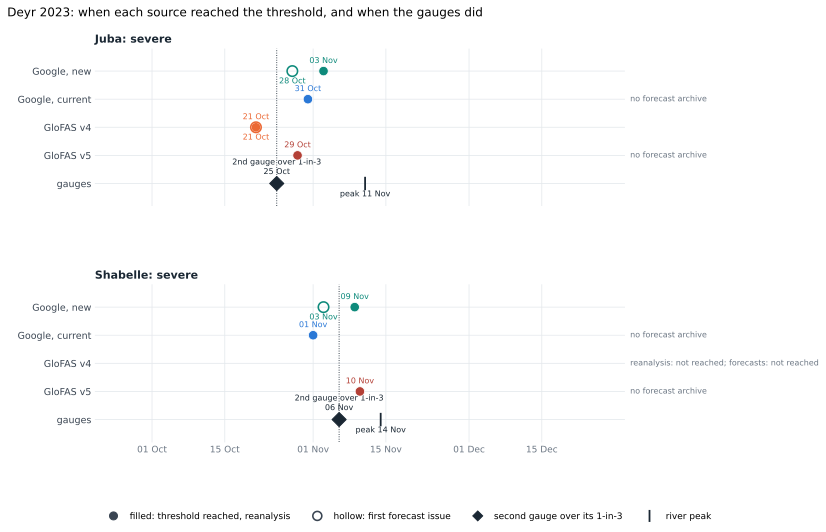
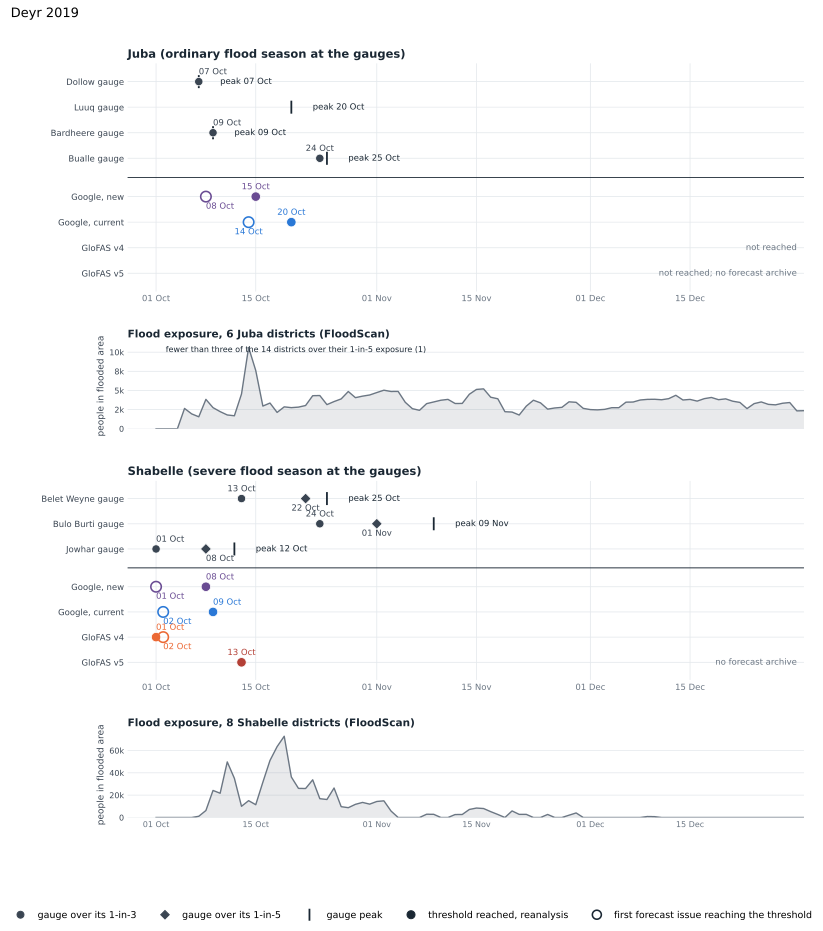
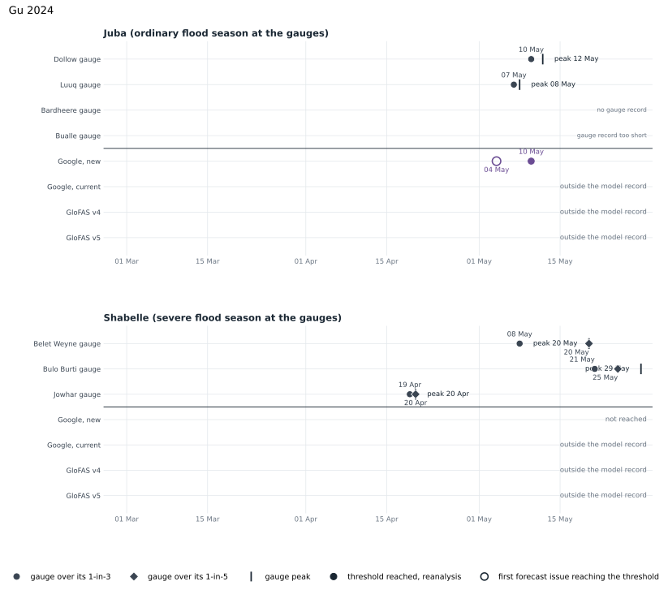
7POD, FAR and F1 by trigger point
Each trigger point against its own gauge, reanalysis 1999 to 2023: a severe flood is the gauge over its own 1-in-5, no gauge flood is the gauge under its 1-in-3.
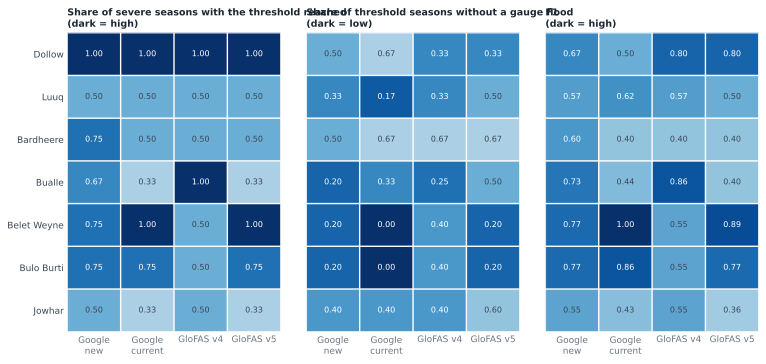
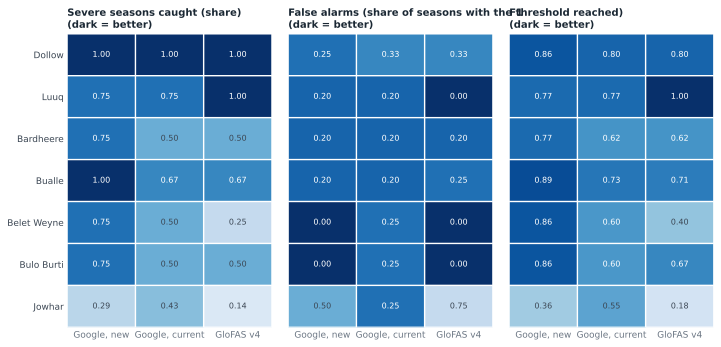
8Data and method notes
- Source: Google Runoff Reanalysis and Reforecast, November 2026 release (reanalysis 1981 to 2025, reforecast 2016 to 2025, leads 0 to 10 days), one HydroBasins outlet per station, the main-stem outlet within 15 km with the largest 1-in-5 flow.
- Leads 1 to 7 are the issue day and the six days after it for GloFAS and Google, new, and days 1 to 7 after the issue day for Google, current, following each archive's own labelling. Only issues dated within October to December or March to May are read.
- On Google, new, Juba Deyr 2006 and 2017 and Juba Gu 2013 and 2023 have all four trigger points above their levels within the season, by 1 to 4%, but never on the same day.
- Shabelle Deyr 2020, Gu 2016 and Gu 2023 count as severe floods on a gauge reading equal to its 1-in-5 level (Jowhar 5.30 m; Belet Weyne at its 8.30 m ceiling). The Juba Deyr 2023 peaks are capped at bank full. Dollow's Deyr record has eight seasons.
- Forecast windows cover 7 or 8 seasons (Google, current in Deyr: 7), with 0 to 3 severe floods each. GloFAS forecasts are an ensemble median, the Google archives a single trace. The Google, current archive has not been verified as the live Flood Hub model; the Google, new scale is not the live feed's. 2026 is in no archive.
- The dates, levels and scores behind every chart and table are published beside this page.